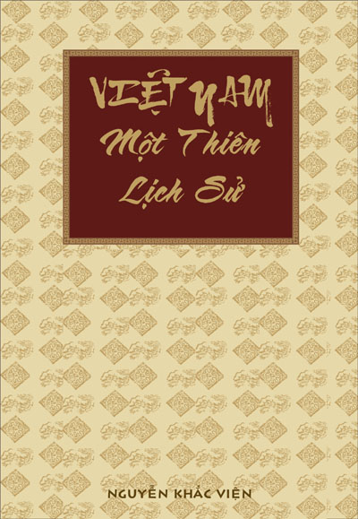

« Back
Việt Nam Một Thiên Lịch Sử
By Nguyễn Khắc Viện

Lời Nói Đầu
Chương 1:
Thời Đại Đồ Đồng
Các Vua Hùng Và Vương Quốc Văn Lang
Vương Quốc Âu Lạc
Chương 2
Chính Sách Đế Quốc Của Người Hán
Những Biến Cố Xã Hội - Kinh Tế
Các Cuộc Khỏi Nghĩa Và Đấu Tranh Giành Độc Lập
Khôi Phục Nền Độc Lập
Chương 3
Sự Phát Triển Kinh Tế Dưới Các Triều Lý - Trần
Đời Sống Xã Hội Dưới Thời Lý - Trần
Tổ Chức Hành Chính, Quân Sự Và Tư Pháp
Vấn Đề Các Dân Tộc Thiểu Số
Việc Gìn Giữ Nền Độc Lập Dân Tộc
Cuộc Chiến Đấu Chống Quân Tống: Sự Nghiệp Của Lý Thường Kiệt
Cuộc Kháng Chiến Vẻ Vang Chống Quân Mông Cổ
Sự Phát Triến Mạnh Mẽ Về Văn Hóa Dưới Thời Lý - Trần (Thế Kỷ Thú XI-XIV)
Ưu Thế Của Phật Giáo
Những Bước Tiến Của Khổng Giáo
Sự Ra Đời Của Văn Học Dân Tộc
Nghệ Thuật Thời Lý - Trần
Chương 4
Sự Chiếm Đóng Của Quân Minh
Khởi Nghĩa Lam Sơn Và Cuộc Chiến Tranh Giành Độc Lập
Thời Kỳ Huy Hoàng Của Những Ông Vua Đầu Tiên Của Triều Lê
Chế Độ Ruộng Đất Và Những Chuyển Biến Của Nền Kinh Tế
Tổ Chức Hành Chính, Quân Sự Và Pháp Lý
Chính Sách Đối Với Các Dân Tộc
Chuyển Biến Về Văn Hóa Trong Các Thế Kỷ XV - XVII
Khổng Giáo Và Các Nho Sĩ
Nhân Vật Vĩ Đại Nguyễn Trãi
Hoạt Động Văn Học Và Sử Học Dưới Thời Lê
BÀI CÁO BÌNH NGÔ
Chương 5
Cuộc Khủng Hoảng Của Chế Độ Nhà Trịnh Ở Phía Bắc
Nhà Tây Sơn Tái Thống Nhất Và Đổi Mới
Chương 6
Quốc Gia Champa
Vương Quốc Khmer Và Angkor Huy Hoàng Tráng Lệ
Những Cuộc Xung Đột Đại Việt - Chămpa, Chân Lạp - Xiêm
Chương 7
Khủng Hoảng Của Hệ Tư Tưởng Khổng Giáo
Sự Phát Triển Của Văn Học Chữ Nôm
Chương 8
Mất Sài Gòn Và Ba Tỉnh Miền Đông Nam Bộ
Những Bối Rối Của Triều Đình Huế Hà Nội Thất Thủ
Sự Đầu Hàng Của Chế Độ Quân Chủ Và Thiết Lập Chế Độ Thuộc Địa
Phong Trào Cần Vương Và Cuộc Chiến Đấu Của Nhân Dân
Giai Đoạn Thứ Hai Của Cuộc Kháng Chiến
Chương 9
Tổ Chức Chính Trị Và Hành Chính
Tổ Chức Giáo Dục Và Văn Hóa
Thuế Khóa, Các Thứ Lệ Phí Và Thuế Công Quản
Sự Khai Thác Kinh Tế Thuộc Địa
Chương 10
Sự Bần Cùng Hóa Nông Dân
Giai Cấp Công Nhân, Giai Cấp Tư Sản, Tầng Lớp Trí Thức Mới
Những Nhà Nho Theo Xu Hướng Cách Tân Và Phong Trào Dân Tộc
Biểu Tình Của Nông Dân, Kháng Chiến Vũ Trang
Việt Nam Trong Chiến Tranh Thế Giới Thứ I (1914 - 1918)
Chương 11
Việc Tăng Cường Khai Thác Kinh Tế Thuộc Địa
Phong Kiến Và Nông Dân
Giai Cấp Vô Sản, Sức Mạnh Của Tương Lai
Một Làn Sóng Mới Sôi Nổi Của Phong Trào Yêu Nước
Sự Tập Hợp Lại Các Lực Lượng Yêu Nước Và Cách Mạng
Yên Bái: “Quốc Dân Đảng” Thất Bại Và Bị Xóa Sổ
Sự Thành Lập Đảng Cộng Sản
Chương 12
Khủng Hoảng Kinh Tế
Những Cuộc Đấu Tranh Lớn Trong Những Năm 1930 - 1931
Đàn Áp Và Khủng Bố Của Thực Dân
Bước Xuất Phát Mới Của Phong Trào Dân Tộc Và Nhân Dân
Tình Hình Việt Nam Khi Chiến Tranh Thế Giới Thứ II Sắp Bùng Nổ
Phong Trào Văn Học 1930 - 1945
Chương 13
Một Cổ Hai Tròng Pháp - Nhật
Sự Ra Đời Của Việt Minh
Bước Ngoặt Lớn Năm 1945
Cách Mạng Tháng Tám
Cuộc Khởi Nghĩa Thắng Lợi Hoàn Toàn Trên Cả Nước
Chương 14
Thành Lập Nhà Nước Dân Chủ, Nhân Dân
Cuộc Đấu Tranh Chống Những Âm Mưu Của Tưởng Giới Thạch
Pháp Xâm Lược Nam Bộ
Chương 15
Từ Cuộc Chiến Đấu Ở Hà Nội Đến Trận Sông Lô
Củng Cố Lực Lượng Kháng Chiến
Chiến Thắng “Biên Giới”. Những Kế Hoặch Mới Của Pháp- Mỹ
Những Tiến Bộ Mới Của Kháng Chiến
Thất Bại Của De Lattre De Tassigny
Kế Hoạch Navarre
Chiến Tranh Và Cải Cách Ruộng Đất
Hội Nghị Genève (Giơnevơ)
Chương 16
Những Cơ Sở Đầu Tiên Của Chủ Nghĩa Xã Hội (1954 - 1965)
Đàn Áp Chiến Tranh Thực Dân Mới (1954 - 1965)
Từ Đàn Áp Đến Chiến Tranh
“Chiến Tranh Đặc Biệt”
Chiến Tranh Nhân Dân Chống Lại Chiến Tranh Leo Thang Và Chiến Tranh Cục Bộ (1965- 1973)
Quan Hệ Việt - Trung Xấu Đi
Chiến Tranh Nhân Dân Chống Chiến Tranh Phá Hoại Bằng Không Quân Và Hải Quân
Chiến Tranh Nhân Dân Chống “Chiến Tranh Cục Bộ”
Cuộc Chiến Tranh Của Nixơn
Sự Câu Kết Washington - Bắc Kinh
Mở Rộng Chiến Tranh
Sự Phát Triển Văn Hóa Trong Những Năm 1945 -1975
Giáo Dục Và Phát Triển Khoa Học
Văn Học Nghệ Thuật
Chương 17
Chiến Tranh Tiếp Diễn
Sự Rêu Rã Của Hệ Thống Thực Dân Mới
Bước Đầu Của Sự Kết Thúc
Đại Thắng Mùa Xuân 1975
Trận Đánh Sài Gòn
Chương 18
Tái Thống Nhất - Những Cuộc Tái Ngộ
Những Bó Buộc Khách Quan Và Những Bước Đi Sai Lầm
Khủng Hoảng
Hướng Tới Một Con Đường Mới?
Các Vấn Đề
Chú Thích